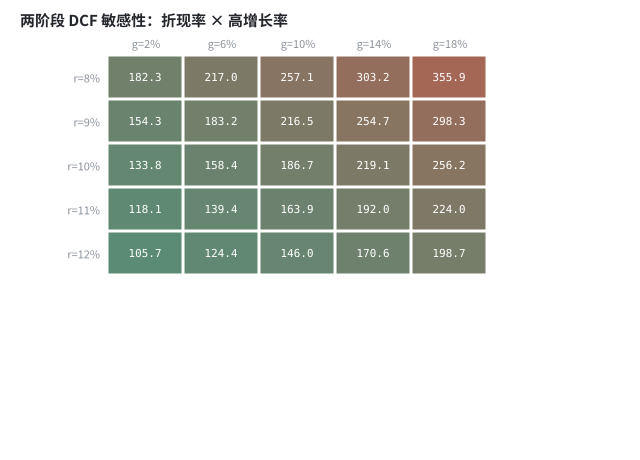
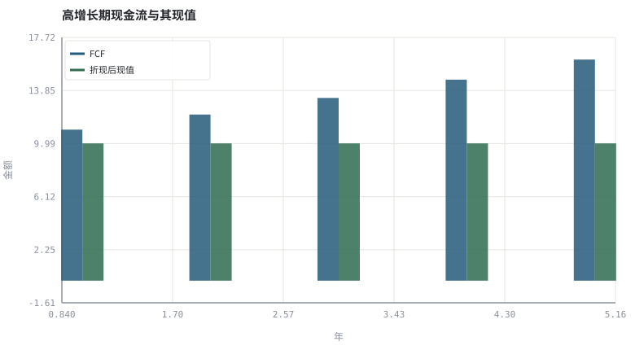

第 10 章股票估值：从 DCF 到相对倍数
估值不是算出一个「正确价格」，而是把一组假设显式地写成可审计的模型。
本章位置：第 09 章用折现给债券定价，本章把同一算子用于不确定的股权现金流；第 11 章 · 指数、折溢价与 ETF 套利机制 讨论一篮子股权如何被指数化，第 21 章 · 因子、CAPM 与 Fama-French 讨论折现率如何被因子解释。
DCF 是一个纯函数 dcf(params) -> value；估值的工程难点不是实现函数，而是为参数写取值范围与来源。反推隐含参数等价于给黑箱做逆向测试。
- 能写出两阶段自由现金流折现模型并做敏感性分析。
- 能解释 PE、PB、ROE 与增长之间的约束关系。
- 能从市价反推隐含增长率，判断市场在定价什么。
- 能说明 DCF 对折现率与永续增长率的极端敏感性。
§知识点地图
每个知识点都配了 1～2 个扩展学习链接；本章完整资源清单见 扩展学习。
| # | 知识点 | 扩展学习 | 状态 |
|---|---|---|---|
| 1 | 自由现金流 FCF | Stock valuation · Price–earnings ratio | 正文已覆盖 |
| 2 | 折现率与 WACC | Stock valuation · Price–earnings ratio | 正文已覆盖 |
| 3 | 两阶段 DCF | Discounted cash flow · Stock valuation | 正文已覆盖 |
| 4 | 永续增长率 | Stock valuation · Price–earnings ratio | 正文已覆盖 |
| 5 | 终值占比 | Stock valuation · Price–earnings ratio | 正文已覆盖 |
| 6 | PE 与 PB | Price–earnings ratio · Stock valuation | 正文已覆盖 |
| 7 | ROE 与杜邦分解 | Return on equity · Stock valuation | 正文已覆盖 |
| 8 | 隐含增长与敏感性 | Stock valuation · Price–earnings ratio | 正文已覆盖 |
§10.1DCF 是一个参数化的假设容器
V_0 = Σ_{t=1}^{n} FCF_t / (1+r)^t + [FCF_(n+1) / (r − g)] / (1+r)^n
其中 r 是折现率（通常用 WACC 近似），g 是永续增长率，且必须满足 r > g。这个式子的价值不在于精度，而在于把「我看好这家公司」拆成四个可争论的数：起步现金流、增长率、折现率、永续增长率。
实操中终值常占估值的大半，因此 r − g 的微小变化会显著改变结果。把 DCF 当作「一个点估计」是误用；正确用法是敏感性表 + 反推隐含假设。
§10.2相对倍数：把绝对估值压缩成可比较的比值
| 倍数 | 定义 | 隐含假设 | 失效场景 |
|---|---|---|---|
| PE | 价格 / 每股收益 | 盈利可持续、会计口径可比 | 周期股盈利顶点、亏损公司 |
| PB | 价格 / 每股净资产 | 净资产能反映价值 | 轻资产、无形资产为主 |
| PS | 价格 / 每股收入 | 利润率会回归正常 | 长期无法盈利的商业模式 |
| ROE | 净利润 / 净资产 | 杠杆与周转稳定 | 高杠杆放大、一次性损益 |
可持续增长率 g ≈ ROE × 留存率 把 PB、ROE 与增长串起来：高 PB 只有在高且可持续的 ROE 下才合理。这就是「贵不贵」与「好不好」之间的桥梁。
§10.3反推比预测更稳健
与其预测未来，不如问：按今天的价格，市场隐含了多高的增长？用二分法求解 dcf(r, g) = 市价 得到一个隐含 g，再判断这个 g 是否超出行业与历史的可行区间。这是把估值从「预测题」转成「一致性检查」，对工程师尤其自然：给定输出，反解输入，再验证输入是否落在合理域。
§Python 分析实例
实验 10-1 · 两阶段 DCF、敏感性矩阵与隐含增长
#!/usr/bin/env python3
# -*- coding: utf-8 -*-
"""用标准库实现 DCF，扫描折现率与增长率，并用二分法反推市价隐含的增长。
数据为合成数据或模型示意，仅用于教学，不构成投资建议。
"""
from __future__ import annotations
import math
import pathlib
import random
import statistics
import sys
sys.path.insert(0, str(pathlib.Path(__file__).resolve().parents[3] / "tools"))
from chart import Chart, candlestick, heatmap, BLUE, RED, GREEN, AMBER
FIG = pathlib.Path(__file__).resolve().parents[1] / "fig"
FIG.mkdir(exist_ok=True)
random.seed(7)
# ---- 参数区 ----
FCF0 = 10.0 # 起始自由现金流
STAGE1 = 5 # 高增长阶段年数
G_TERM = 0.025 # 永续增长率
R0 = 0.10 # 基准折现率
G0 = 0.10 # 基准高增长阶段增长率
MARKET = 180.0 # 观察到的市值（合成示意）
R_LIST = [0.08, 0.09, 0.10, 0.11, 0.12]
G_LIST = [0.02, 0.06, 0.10, 0.14, 0.18]
# ---- 计算与作图 ----
def dcf(r, g1):
fcf, pv = FCF0, 0.0
for t in range(1, STAGE1 + 1):
fcf *= (1 + g1)
pv += fcf / (1 + r) ** t
tv = fcf * (1 + G_TERM) / (r - G_TERM)
return pv + tv / (1 + r) ** STAGE1
base = dcf(R0, G0)
matrix = [[dcf(r, g) for g in G_LIST] for r in R_LIST]
heatmap(FIG / "10-sensitivity.svg", matrix,
["r=%.0f%%" % (100 * r) for r in R_LIST],
["g=%.0f%%" % (100 * g) for g in G_LIST],
title="两阶段 DCF 敏感性：折现率 × 高增长率",
vmin=min(min(row) for row in matrix), vmax=max(max(row) for row in matrix))
print("敏感性图:", str(FIG / "10-sensitivity.svg"))
fcf_path, pv_path, fcf = [], [], FCF0
for t in range(1, STAGE1 + 1):
fcf *= (1 + G0)
fcf_path.append(fcf)
pv_path.append(fcf / (1 + R0) ** t)
c = Chart(FIG / "10-dcf.svg", "高增长期现金流与其现值", xlabel="年", ylabel="金额")
c.bars(range(1, STAGE1 + 1), fcf_path, BLUE, label="FCF")
c.bars(range(1, STAGE1 + 1), pv_path, GREEN, label="折现后现值")
print("现金流图:", c.save())
lo, hi = -0.10, 0.60
for _ in range(80):
mid = (lo + hi) / 2
if dcf(R0, mid) < MARKET:
lo = mid
else:
hi = mid
implied = (lo + hi) / 2
print("基准DCF=%.2f 终值占比=%.1f%% | 敏感性区间 %.1f ~ %.1f | 市价隐含 g=%.2f%%" %
(base, 100 * (1 - sum(pv_path) / base),
min(min(row) for row in matrix), max(max(row) for row in matrix), 100 * implied))操作：把 R0 上调 1 个百分点，观察估值下降幅度；再把 G_TERM 逼近 R0 看发散。 预期与判读：敏感性表里同一列的变动往往比同一行更剧烈，说明 r − g 是估值的主控参数。反推的隐含增长率告诉你市场在假定什么，比直接预测更有可证伪性。
改参数看趋势：把 MARKET 改成基准 DCF 的两倍，隐含增长率会升高；判断它是否超出行业合理区间。 文件位置：part2/10-equity-valuation/code/10-dcf.py


代码块右上角可一键复制；仓库里的 code/*.py 由 tools/extract_code.py 从这些代码块自动抽取。脚本只用标准库、固定 random.seed(7)，运行后写出 fig/*.svg；批量运行用 ./tools/run_python.sh。
§本章参考资料
按本章知识点挑选的精读资料；更多检索入口见 扩展学习。
Discounted cash flow
百科 · 参考资料把未来现金流折成现值
怎么用：现金流折现的标准定义与边界https://en.wikipedia.org/wiki/Discounted_cash_flow
Stock valuation
百科 · 参考资料相对估值与现金流折现的统一视角
怎么用：相对估值与绝对估值的统一视角https://en.wikipedia.org/wiki/Stock_valuation
Return on equity
百科 · 参考资料股东权益回报率与杜邦分解
怎么用：ROE 与杜邦分解https://en.wikipedia.org/wiki/Return_on_equity
§常见误区
- 把
g设到接近或超过r，得到爆炸性估值。 - 用周期股顶点盈利做永续增长基数。
- 把 DCF 的点估计当成目标价，不做敏感性分析。
- 跨行业直接比较 PE，忽略资本结构与会计口径差异。
§习题与思考
- 推导
g ≈ ROE × 留存率，并说明杠杆如何污染这个关系。 - 在示例里固定
r，画出估值对G_TERM的曲线，解释非线性。 - 找一家公司的年报，列出 DCF 四个参数各自的取数依据。
§扩展学习
以下资料按本章知识点挑选，可直接精读或对照真实数据；知识点地图里每一条也挂了 1～2 个直达链接。
- Stock valuation（百科）：相对估值与现金流折现的统一视角
Stock valuation - Price–earnings ratio（百科）：盈利口径下的估值倍数
Price–earnings ratio - Discounted cash flow（百科）：把未来现金流折成现值
Discounted cash flow - Return on equity（百科）：股东权益回报率与杜邦分解
Return on equity - 美国 SEC（机构）：披露文件、基金监管与执法信息
美国 SEC
继续扩展：在 Google Scholar 检索本章相关论文 · 在 MIT OCW 检索配套课程 · 在 arXiv 检索预印本 · 全书参考资源总表 · 附录 A 速查与链接总表
§延伸阅读与内链
- 第 11 章 · 指数、折溢价与 ETF 套利机制 指数编制与 ETF 套利；第 21 章 · 因子、CAPM 与 Fama-French 因子视角下的期望收益。